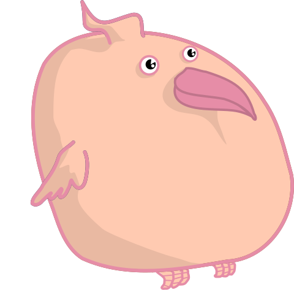

Neapolitan is a CSS layout framework for quickly building responsive, mobile-first designs. The use of Sass mixins allows for purely semantic HTML, aiding readability and accessibility for human and robot alike.
Minimal
Use only the styles you need. Unused styles have zero overhead.
Modular
Built on unstyled Sass mixins and split into composable modules.
Modern
Using flexbox and sizes in rem, bring perfectly responsive sites to all modern browsers.
The only default styling set by the framework is a minimal reset file. Otherwise, no element is styled unless you specifically include the relevant mixin. This prevents pollution of styles and the annoyance of trying to override them. As the great William Shakespeare once said on default styles:
Installation
Installation is simple. Just clone the GitHub repository and copy the neapolitan folder into your project directory. Then, place @import "neapolitan/base"; at
the top of your project's Sass files and you're all set!
This page provides a brief overview of some of Neapolitan's features. For the full documentation, click the big link below!
Documentation!The Grid
Neapolitan's grid is built on Flexbox, which lends it a heap of flexibility. Sizes can be automatically calculated, explicitly specified, or a mix of both.
To demonstrate usage of Neapolitan's grid, we need the help of Gustave, the ice-cream loving bird who is very fussy about his colour proportions. He decides he wants a container of standard neapolitan icecream: chocolate, vanilla, and strawberry.
<div class="tub">
<div class="chocolate"></div>
<div class="vanilla"></div>
<div class="strawberry"></div>
</div>It's as simple as adding the grid
mixin.
.tub {
@include grid();
}Deep down, however, Gustave is a strawberry bird at heart. He decides that his ideal container of icecream should be half strawberry, with the rest evenly divided between the other flavours.
.tub {
@include grid();
}
.strawberry {
@include width(1/2);
}Gustave is happy with the new strawberry arrangement, but after some soul-searching he decides that vanilla really isn't for him. He's not sure exactly how much more chocolate he wants, but he knows that it should be more than it is currently.
.tub {
@include grid();
}
.strawberry {
@include width(1/2);
}
.chocolate {
@include gobble(2);
}Finally, Gustave is satisfied with the arrangement. However, he is about to go on a flight, where he will be forced to use his mobile phone to browse Twitter, his favourite website. He decides that for such an inconvenience he really deserves more strawberry. Wouldn't it be nice if his container automatically adapted for such changes?
.tub {
@include grid();
}
$desktop: media-from(769px);
.strawberry {
@include width(2/3);
@include width(1/2, $desktop);
}
.chocolate {
@include gobble(2, $desktop);
}Hopefully the flexibility of the grid system has become clear. The grid itself can even accept breakpoints which influence parameters like direction and gutter widths.
Here is a targetResponsiveness
Neapolitan comes with a number of responsive helpers. The key to the
responsiveness system is the concept of defining breakpoints. A
breakpoint is simply defined as a Sass map, where each key-value pair
is a media query setting (like max-width). If you don't
want to do this by hand (and let's face it, who does?), just use one of
the included functions.
$desktop: media-from(769px);
$tablet: media-between(481px, 768px);
$mobile: media-until(480px);
As we saw in the grid section, almost every Neapolitan mixin takes a $media parameter,
which applies the mixin to only that breakpoint variable. There are
also a number of responsive helpers which act on breakpoints.
Mobile Only!
The
showmixin hides an element for all breakpoints except the given one.Hidden on Tablet!
The
hidemixin hides an element for only the given breakpoint.Sometimes Pink!
The
breakpointmixin can apply arbitrary styles to a breakpoint.
li {
@include grid();
li:nth-child(1) {
@include show($mobile);
}
li:nth-child(2) {
@include hide($tablet);
}
li:nth-child(3) {
@include breakpoint($desktop) {
color: $strawberry;
}
}
}Components
Neapolitan comes with a variety of completely unstyled, pure-CSS UI components. Due to the mixin-based nature of the framework, it's important to use the right HTML structure with the right component. However, the approach lends itself to great flexibility.
For example, the horizontal-menu component converts a list of lists into a horizontal dropdown menu.
- Flavours
- Chocolate
- Vanilla
- Strawberry
- Suppliers
- Ice Creams 'r' Us
- Cream and Gleam
- We Scream for Ice Cream
- Locations
- Melbourne
- Sydney
- Canberra
- Adelaide
<ul id="menu">
<li>Flavours
<ul>
<li>Chocolate</li>
<li>Vanilla</li>
<li>Strawberry</li>
</ul>
</li>
<li>Suppliers
<ul>
<li>Ice Creams 'r' Us</li>
<li>Cream and Gleam</li>
<li>We Scream for Ice Cream</li>
</ul>
</li>
<li>Locations
<ul>
<li>Melbourne</li>
<li>Sydney</li>
<li>Canberra</li>
<li>Adelaide</li>
</ul>
</li>
</ul>#menu {
@include horizontal-menu();
}Hopefully that example proves how easy it is to apply the UI components to HTML, while still keeping it semantic. It's important to remember that there is no default styling for the components, and the example above includes extra styles that aren't listed. This keeps the UI very flexible!
Thanks!
I couldn't have made Neapolitan without inspiration from frameworks like Bourbon Neat, Susy, and Bulma.
Gustave the Bird is a remix of Fat Bird by Hector Gomez, released under the CC0 1.0 Universal Public Domain license.